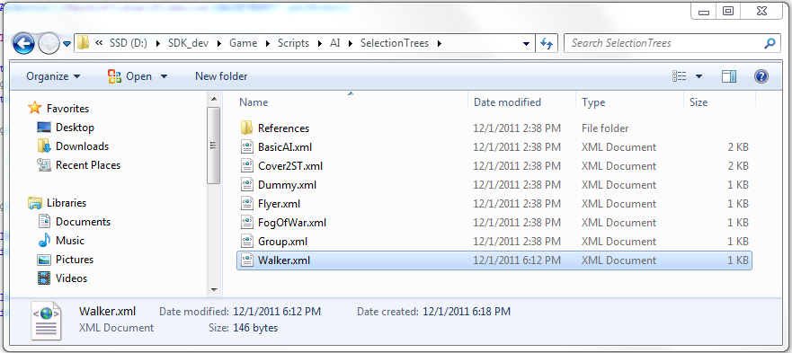
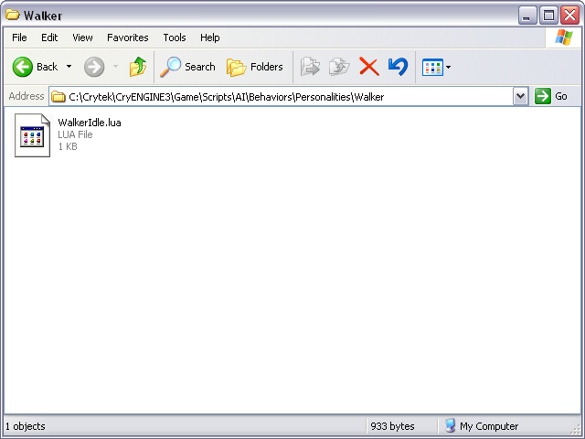
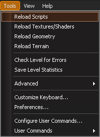
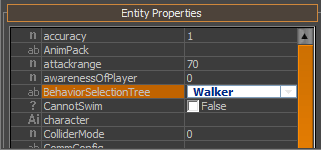
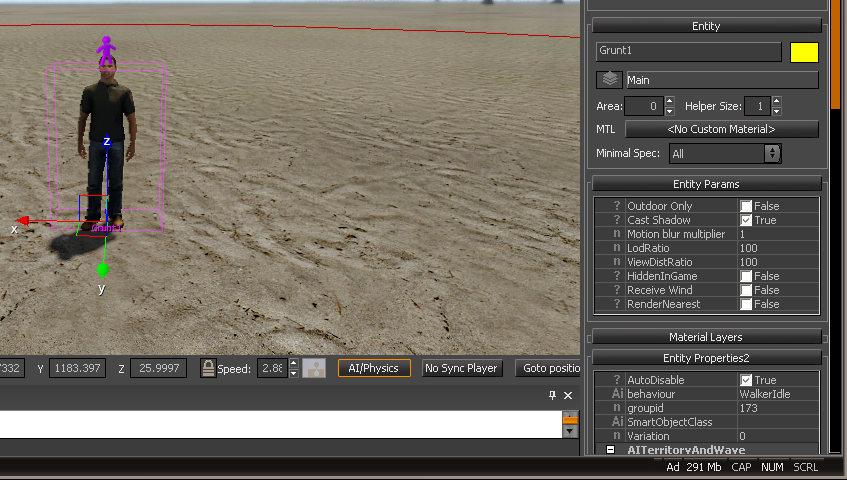

This article is for CRYENGINE 3.4 or earlier. The Behavior Selection Tree and old-style behavior scripts was deprecated in favor of the Modular Behavior Tree in CRYENGINE 3.5 and beyond.
Overview
This tutorial is a simple implementation of wander behavior.
Attachments
Please use the following attachments to this document:
Creating AI Wander Behavior
1. Add the Walker.xml file to the following folder:
Game/Scripts/AI/SelectionTrees
2. Add the WalkerIdle.lua script to the following folder:
Game/Scripts/AI/Behaviors/Personalities/Walker/WalkerIdle.lua
3. Start the Sandbox Editor and open or create a test level. If the Editor was already active, on the menu bar, go to the Tools menu and select Reload Scripts.

5. Insert a Grunt entity into your level.
6. On the Entity Properties tab, set the BehaviorSelectionTree property to "Walker".

7. Make as many copies of him as you want.
8. Click the AI/Physics button at the bottom of the Perspective Viewport.

Debugging
The following debug options may be helpful:
ai_DebugDraw
Toggles the AI debugging view.
Usage: ai_DebugDraw [-1/0/1]
Default is 0 (minimal), value -1 will draw nothing, value 1 displays AI rays and targets
and enables the view for other AI debugging tools.
ai_DrawPath
DUMPTODISK
Draws the generated paths of the AI agents. ai_drawoffset is used.
Usage: ai_DrawPath [name]
none - off (default)
squad - squadmates
enemy - all the enemies
all - all AIs
ai_StatsTarget
Focus debugging information on a specific AI
Display current goal pipe, current goal, subpipes and agentstats information for the selected AI agent.
Long green line will represent the AI forward direction (game forward).
Long red/blue (if AI firing on/off) line will represent the AI view direction.
Usage: ai_StatsTarget AIName
Default is 'none'. AIName is the name of the AI
on which to focus.
ai_DrawRefPoints
Toggles reference points and beacon view for debugging AI.
Usage: ai_DrawRefPoints [0|all|name]
Default is 0 (off). Indicates the AI reference points by drawing
cyan balls at their positions.
Further Notes
Note that the WalkerIdle.lua script relies on the ACT_GOTO convenience method, which uses blocking "stick" goalop. Using the non-blocking "stick" goalop with different parameters can yield other, more sophisticated behaviors.